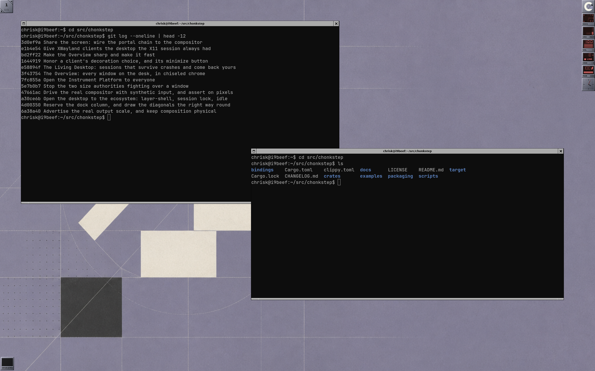
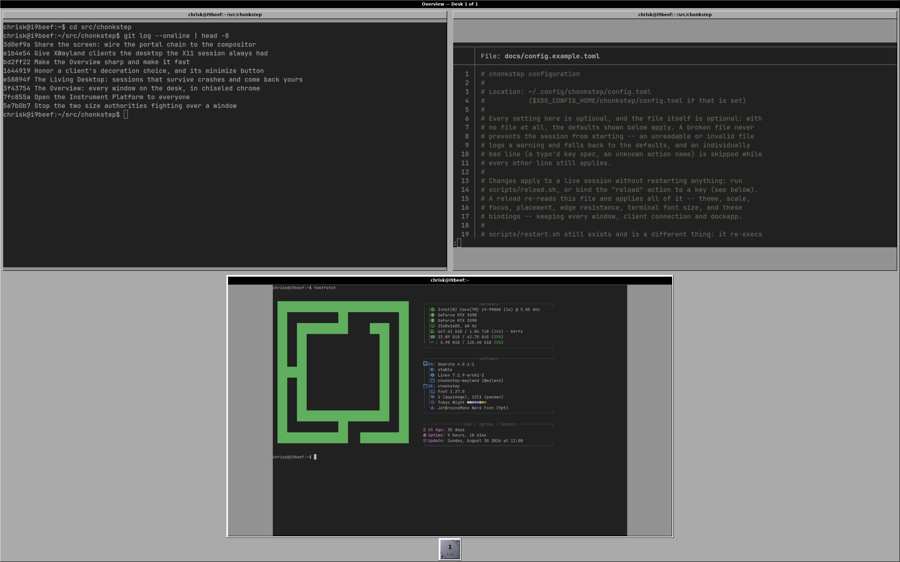
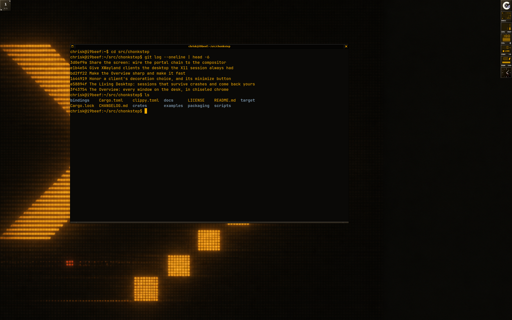
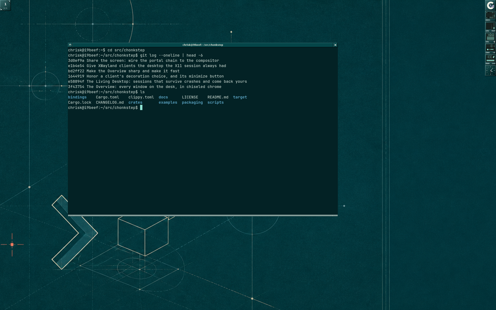
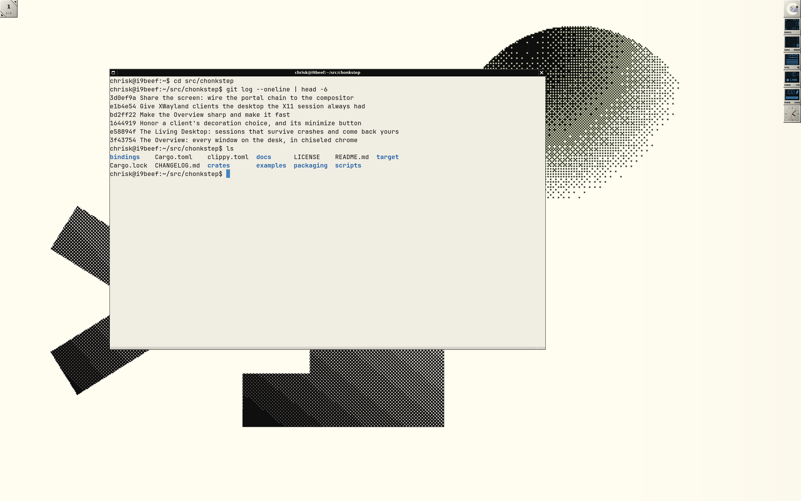
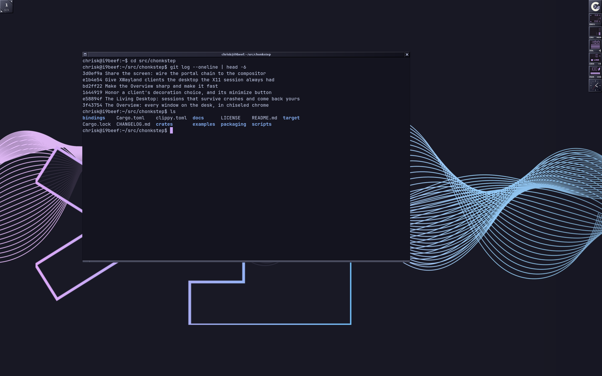
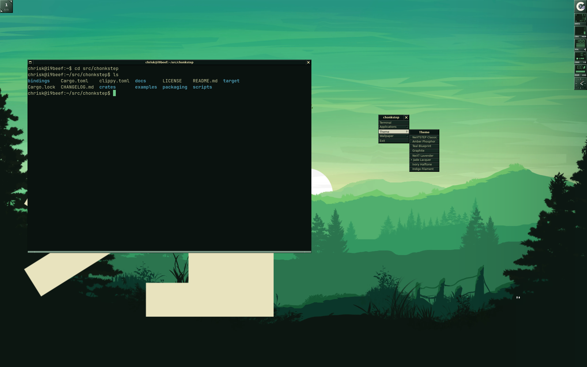

chonkstep is one desktop with two faces: an X11 window manager and a Wayland compositor, wired to the same shell, so a feature lands once and both sessions get it by construction. The chrome is chiseled and specified to the pixel; under it sit a dock of crash-proof instruments, real workspaces, and a session that survives.
Written in Rust. GPL-3.0. Runs as a real login session on DRM/KMS/libinput hardware, or nested in a window on the desktop you already have.

Each of these is a mechanism in the code with tests behind it, not a roadmap item. File references are into the repository.
Every dock tile is a separate process that pushes finished pixels over a private socket. A widget that crashes, hangs, leaks or loops shows a dead face in its own tile — and nothing else happens. The shell never blocks on a dockapp: not on send, not on accept, not on a handshake.
Enforced, not advised: "a dock widget must not do I/O"
is a build error (clippy disallowed_methods/disallowed_types,
denied in CI), and the protocol's failure modes have tests.
A theme pick, a UI scale change, and any config edit apply to the running session in place — nothing closed, no window lost, every dockapp kept. Restart exists for exactly one thing a running process cannot apply to itself: a new build.
One path (apply_session_state) serves startup
and reload, so a setting cannot be reloadable but not startable.
With restore_session = true, the desktop records each
window's app, geometry, workspace and shape as you work, and brings
the layout back at the next login — and after a crash the watchdog
recovered from. A window you closed is never resurrected.
The session script supervises the compositor: abnormal exits restart it with the recorded layout; more than three crashes in a minute trips a brake instead of crash-looping.
ext-session-lock, with an absolute contract: while locked, the
scene is lock surfaces over black and nothing else — on screen and in
every capture path. Set lock_command and a crash-recovered
session comes back locked, not exposed.
The lock lifecycle is a pure state machine whose tests pin exactly the transitions that must not exist. Layer-shell and idle-notify ship alongside it, so lockers, bars and launchers from the wlroots ecosystem run here.
Every window on the desk, drawn in the desktop's own language:
cards in miniature real chrome with live captures, over a strip of genuine
workspace tiles. super+up, arrows, Return. Captures are served at card
resolution while it is open, so terminal text stays legible instead of
arriving as smear.

A theme restyles everything at once — chrome, menus, wallpaper, dock, instruments, and the palette of every terminal launched from then on — live, with nothing closed. NeXTSTEP Classic, Amber Phosphor, Teal Blueprint, Graphite, NeXT Lavender, Jade Lacquer, Ivory Halftone, Indigo Filament.





The dock is not a bar that renders plugins — it is a host for out-of-process instruments. You can write one in any language that can open a Unix socket. This is a complete dockapp, in Python, stdlib only:
from chonkdock import Dockapp
class Hello(Dockapp):
def draw(self, ctx, buf):
for i in range(0, len(buf), 4):
buf[i:i + 4] = b"\x30\x60\x90\xff" # one opaque blue tile
return True
Hello("hello-instrument").run()Install it — or anything with a git URL — with chonk-get, and the
tile appears at the next shell restart, themed, supervised, and unable to
freeze the desktop:
$ chonk-get install ./hello-instrument
$ chonk-get install bindings/python # the shipped Python clock
$ chonk-get install examples/chonk-shelf # the Shelf: clipboard history
$ chonk-get listThe wire protocol is specified byte-for-byte in docs/dockapp-protocol.md; docs/instrument-platform.md traces each guarantee to the mechanism that enforces it. Python and Go bindings ship in the repository, dependency-free. Dockapps are ordinary processes running as you — not sandboxed — so install one with the same care as any other program.
Arch (and Omarchy). You get two real login sessions — "chonkstep" and "chonkstep (Wayland)" — in your display manager's picker, or startable from a TTY.
# As a package:
git clone https://github.com/iconidentify/chonkstep.git
cd chonkstep/packaging/arch
makepkg -si -p PKGBUILD-git # plain PKGBUILD pins the release tag
# Or from the checkout (nothing is copied out; scripts/update.sh is the upgrade):
cd chonkstep
scripts/install.sh
# Or just look at it first, nested in a window on your current desktop:
cargo build --release -p chonkstep-wayland
./target/release/chonkstep-waylandThen read the quickstart — install to first hour — and the keybinding card. The ones to learn first:
| alt+shift+return | terminal |
| super+up | the Overview |
| alt+tab (hold) | the modal window switcher |
| alt+ctrl+left/right | previous / next workspace |
| right-click the desktop | root menu: applications, themes, exit |